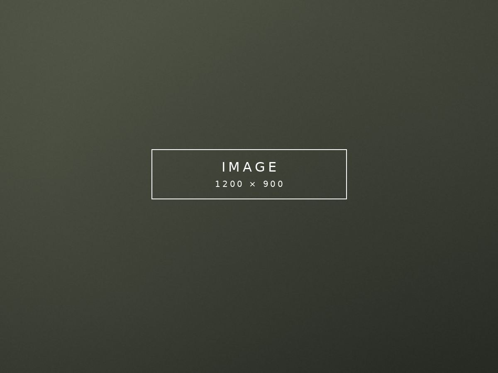

820 homesites · 1,180 acres · Greg Norman golf
Request Early AccessThe Development
1,180 acres on Arno Road in College Grove, about thirty minutes south of Nashville — gated, with two main and two side entrances. The land was planned as a conservation development: over sixty acres of open space, ninety acres of horse pasture and five miles of wooded trails were designed in rather than left over.
groveliving.com; Dale & Associates
820 approved homesites across 1,180 acres, begun in 2007 and opened in 2013. It is now in its final phase. Seven Signature Builders work here — Ford Classic Homes, Legend Homes, Davis Properties, Stonegate Homes, Trace Construction, Luna Custom Homes and Schumacher Homes — and homes are still being completed.
groveliving.com; Dale & Associates
Eighteen holes by Greg Norman, opened 2012: par 72, 7,368 yards from the Norman tees, rated 75.8 with a slope of 142. Golf Digest ranks it eighth in Tennessee for 2025-26, up from ninth. The clubhouse is the Manor House, with a wine cellar, pro shop and both casual and fine dining.
GolfPass; Golf Digest Best in State 2025-26
Gallery
The arrival. Gated is the first thing a buyer asks about and the photograph should answer it.
the-grove-1.jpg
The clubhouse, ideally at dusk with the windows lit.
the-grove-2.jpg
Greg Norman’s name does the work if the frame is good. Morning or late light.
the-grove-3.jpg
A street of finished houses. Seven builders, one streetscape.
the-grove-4.jpg
The resort pool with beach entry. This is a family community and the photograph should say so.
the-grove-5.jpg
Ninety acres of pasture, ideally with horses. Nothing else in the region’s luxury communities has this.
the-grove-6.jpg
Drone, high enough to read the scale — the course, the open space, the trails.
the-grove-7.jpg
Eight frames in total — the seven above plus a hero. Send them at 1600px wide or larger, landscape, and they will be cropped to fit these shapes.
What It Costs
RealTracs MLS via nashvillehome.guru, twelve months to 20 August 2026
Fifty-six homes closed in twelve months — four times Witherspoon’s volume and more than twice Rosebrooke’s. The Grove alone accounted for roughly a fifth of every sale in College Grove. Fifteen of those closed in the last ninety days, at a $3,196,834 median.
This is the genuine differentiator. You can buy a house here and use the community amenities through the HOA without taking a golf membership at all — golf and sports memberships are priced separately and tiered. Most comparable golf communities make it compulsory. Fees are not published; ask and we will get the current schedule in writing.
Published figures disagree sharply. RealTracs records a 58-day median across the year; Redfin reports 160 days over a recent three-month window. New-construction listing dates distort these numbers badly. Expect months rather than weeks, and budget accordingly.
Availability
The Grove is in its final phase but not finished — homes have been completed as recently as 2026, so a buyer can still commission a custom build rather than take a resale. That will not be true for much longer.
Around thirty homes are listed, from $1,950,000 to $7,250,000, with another eight under contract. Homesites are also still available, from roughly $730,000 to $1,325,000.
Houses sold in the past year ran 3,600 to 10,085 square feet, median 5,538, built between 2013 and 2026. Lots run a third of an acre to nearly two. HOA dues run $237 to $400 a month, averaging $276.
Active inventory as at August and September 2026; counts vary between sources from thirty to forty-four depending on whether homesites and pending sales are included. Ask us for the current list, and for anything not yet released.
The Club
Casual and fine dining, bar and lounge, an outdoor pavilion with dining service, a wine cellar, locker rooms and the pro shop.
A resort pool with beach entry and a waterslide, a competition lap pool, the Rosemary Spa, a staffed fitness centre and a movement studio running yoga, dance and boot camps.
Ninety acres of horse pasture with boarding, lessons and trail rides through a partnership with the Jaeckle Centre, five miles of wooded trails, an organic vegetable garden, honeybees and a general store.
Dues run $237 to $400 a month depending on section, averaging $276, and cover the common areas, private roads and gated entrances. Club membership is separate and optional.
Williamson County Schools
Rated five stars by SchoolDigger.
Ranked eighth of 576 middle schools in Tennessee.
Ranked twelfth in Tennessee, with a graduation rate above 95%.
Zoning as published August 2026. Williamson County rezones periodically — verify any specific address with the district.
Nearby
The winery co-founded by Kix Brooks, with live music in the vines from May to October.
A sixth-generation dairy farm on Arno Road, the same corridor as The Grove, with a farm store and tours.
Nearly five miles of interconnected trails with guided hikes and programmes.
Nearby
College Grove keeps commercial development to a minimum by design. Dinner means Franklin, fifteen to twenty-five minutes north.
Casual and fine dining inside the gate, which is part of the point of living here.
On Horton Highway — breakfast, deli and the closest thing to a village shop.
Nearby
Greg Norman’s eighteen holes inside the gate — par 72, 7,368 yards, eighth in Tennessee.
Two courses in Franklin by Bob Cupp and Tom Kite, opened 1992.
Private, in Brentwood. Arnold Palmer Signature Design, 2000.
Location
Getting Around
Approximate published driving times from College Grove.
Middle Tennessee